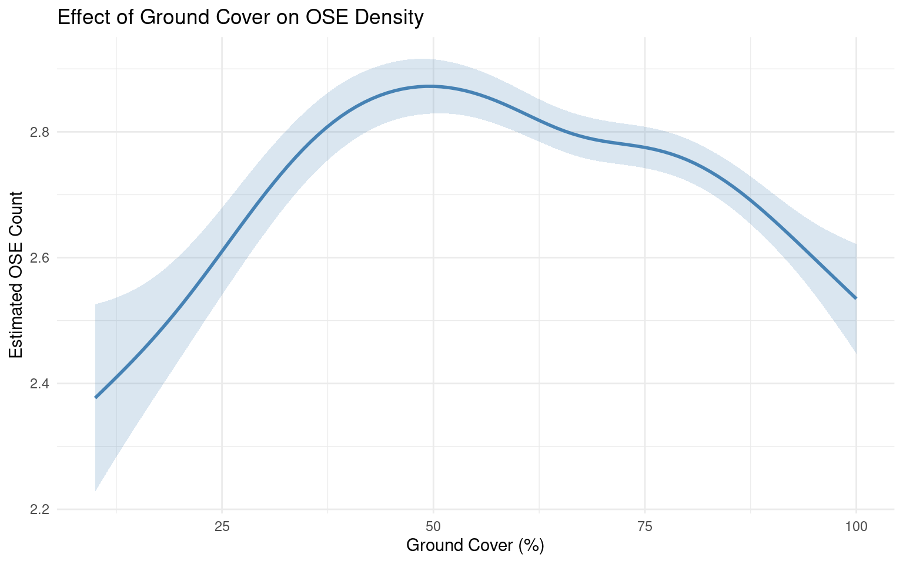
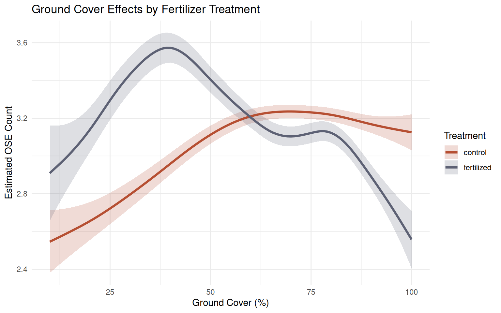
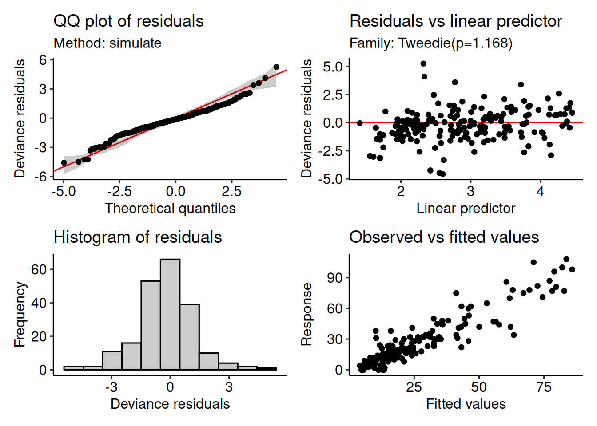
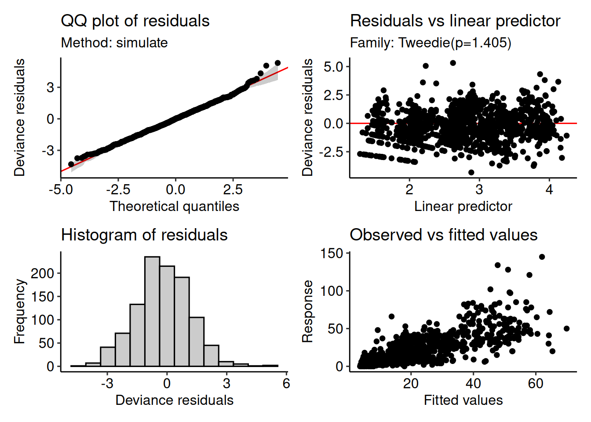
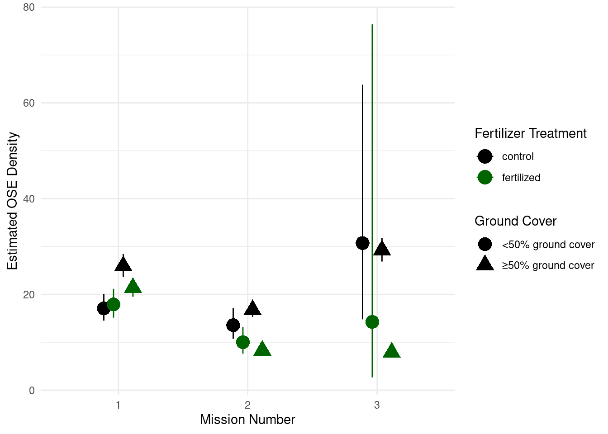

2021 Locust × Ground Cover
NoteExploratory Work
This page contains exploratory analysis conducted during the development of the manuscript. These analyses informed our statistical approach and data management decisions. Not all content here appears in the final manuscript. For the final methods and results, see the Methods and Results page.
Overview
This analysis explores how locust (OSE) density is influenced by ground cover across different regions and fertilizer treatments. We use generalized additive models (GAMs) with a Tweedie family distribution to handle the overdispersed count data.
Analysis 1: Region-Treatment Interaction Model (Initial Approach)
This initial model uses a tensor product smooth to examine how the relationship between ground cover and OSE count varies across region-treatment combinations.
Model Specification
\[ \begin{align*} \text{ose\_count}_i &= \alpha + f(\text{percent\_ground\_cover}_i, \text{region\_treat}_i) + b_{\text{farmer}_i} + \varepsilon_i \end{align*} \]
where:
- \(\alpha\) is the intercept,
- \(f(\text{percent\_ground\_cover},\, \text{region\_treat})\) is a smooth function (tensor product, using factor-smooth interaction) over percent ground cover and region treatment,
- \(b_{\text{farmer}_i}\) is a random effect for each farmer,
- \(\varepsilon_i\) is the residual error.
Model Fitting
The model diagnostics look pretty good! I tried to build a poisson model, but the data was overdispersed. Instead I went with a tweedie model which does a pretty good job at handling this type of data:
Model Results
The smoothed relationships show regional variation in how ground cover affects OSE density. Similar trends are observed in Kaffrine, Fatick, and Saint-Louis, while Thiès shows a distinct pattern. The control and fertilized treatments also exhibit different relationships.
Note: These results may differ from earlier manuscript versions due to data processing differences.

Model Summary Statistics
| GAM Model Summary: OSE Density × Ground Cover (Region-Treatment Model) | ||||
| Term | Estimated DF | Reference DF | F Statistic | P-value |
|---|---|---|---|---|
Analysis 2: Additive Random Effects Model (Current Analysis)
Updated: December 26, 2025
This refined approach uses a simpler model structure with additive random effects rather than complex interactions. This model includes:
- A smooth term for percent ground cover
- Random effects for region, fertilizer treatment, mission number, and farmer
Key findings:
- The relationship between ground cover and OSE count is non-linear, peaking around 50% ground cover
- OSE counts are lower at both low and high ground cover
- The model explains approximately 52% of deviance in the data
Model Specification and Fitting
Ground Cover Effect
The smooth effect of ground cover on OSE count shows a clear non-linear relationship:

Ground Cover Patterns
Ground Cover by Mission
Ground cover increased throughout the growing season across all regions, with minimal regional differences.

Ground Cover by Fertilizer Treatment
Ground cover did not differ significantly between fertilizer treatments, but did vary between missions. No significant interaction was detected.

Family: gaussian ( identity )
Formula: percent_ground_cover ~ fertilizer_treatment * mission_number
Data: data_filtered
AIC BIC logLik -2*log(L) df.resid
11094.8 11130.9 -5540.4 11080.8 1277
Dispersion estimate for gaussian family (sigma^2): 328
Conditional model:
Estimate Std. Error z value
(Intercept) 54.911 1.210 45.40
fertilizer_treatmentfertilized 2.733 1.694 1.61
mission_number2 13.916 1.720 8.09
mission_number3 23.039 1.815 12.70
fertilizer_treatmentfertilized:mission_number2 -2.270 2.400 -0.95
fertilizer_treatmentfertilized:mission_number3 -2.765 2.528 -1.09
Pr(>|z|)
(Intercept) < 2e-16 ***
fertilizer_treatmentfertilized 0.107
mission_number2 5.99e-16 ***
mission_number3 < 2e-16 ***
fertilizer_treatmentfertilized:mission_number2 0.344
fertilizer_treatmentfertilized:mission_number3 0.274
---
Signif. codes: 0 '***' 0.001 '**' 0.01 '*' 0.05 '.' 0.1 ' ' 1Analysis 3: Fertilizer-Specific Ground Cover Effects
Model Comparison Analysis
To determine whether the effect of ground cover on OSE count varies by fertilizer treatment, we compare multiple model structures using AIC.
Model Comparison
# A tibble: 4 × 3
model_name AIC delta_AIC
<chr> <dbl> <dbl>
1 Smooth by Fertilizer Treatment 9692. 0
2 Linear Interaction 9742. 49.9
3 No Fertilizer Treatment Smooth 9777. 85.1
4 Null Model 10392. 700. Model Selection Results
The model with fertilizer-specific smooths (“Smooth by Fertilizer Treatment”) was strongly supported by AIC (Δ AIC = 0). This indicates that fertilizer treatment modifies the functional relationship between ground cover and OSE count.
Fertilizer-Specific Effects

Interpretation
Key Findings
Model Selection: The fertilizer-specific smooth model was strongly preferred (Δ AIC = 0), indicating that fertilizer treatment fundamentally alters the ground cover–OSE density relationship.
Peak Densities:
- Fertilized plots: OSE counts peak at approximately 40% ground cover
- Control plots: OSE counts peak at approximately 60–70% ground cover
Mechanism: Fertilizer treatment likely modifies OSE responses through:
- Changes in crop vigor and nutritional quality
- Altered plant species composition
- Modified microclimate conditions
Implications
The interaction between fertilizer and ground cover demonstrates that fertilizer application doesn’t simply shift overall OSE abundance—it changes where along the ground cover gradient OSE reach peak density. This has important implications for management strategies, as optimal ground cover targets may differ between fertilized and unfertilized fields.
Simpler models (null, linear interaction, or single smooth) were poorly supported, justifying the inclusion of fertilizer-specific smooths in reporting and interpretation.
Analysis 4: Deep dive into ground cover x fertilizer impact on OSE density
Test the effect of fertilizer on OSE_count, and whether ground cover (as a smooth, nonlinear function) mediates the fertilizer effect, while controlling for repeated measures at the farmer level and nuisance effect of region.
Unified model
\[ \begin{align*} \text{OSE\_count}_i &= \beta_0 \\ &\quad + \beta_1\, \text{fertilizer\_treatment}_i \\ &\quad + \beta_2\, \text{mission\_number}_i \\ &\quad + \beta_3\, (\text{fertilizer\_treatment}_i \times \text{mission\_number}_i) \\ &\quad + \beta_4\, \text{region}_i \\ &\quad + f_{\text{fertilizer\_treatment}_i}(\text{percent\_ground\_cover}_i) \\ &\quad + b_{\text{farmer}_i} \\ &\quad + \varepsilon_i \end{align*} \]
- fertilizer_treatment * mission_number:
- Captures difference before and after fertilizer application.
- Models differential effect of fertilizer after application (mission_number 2/3 vs 1).
- region:
- Included as a fixed variable.
- s(percent_ground_cover, by=fertilizer_treatment):
- Factor-smooth allows ground cover x OSE_count relationship to vary by treatment.
- Tests the “mediation” hypothesis.
- (1|farmer):
- Random intercept for farmers, controls for repeated measures and paired plot structure.
| term | estimate | std.error | statistic | p.value |
|---|---|---|---|---|
| (Intercept) | 3.1276297 | 0.0544331 | 57.458257 | 0.0000000 |
| fertilizer_treatmentfertilized | -0.1404329 | 0.0539619 | -2.602445 | 0.0093753 |
| mission_number2 | -0.3226009 | 0.0563570 | -5.724241 | 0.0000000 |
| mission_number3 | 0.1676941 | 0.0580630 | 2.888140 | 0.0039480 |
| regionKaffrine | 0.6492215 | 0.0564978 | 11.491084 | 0.0000000 |
| regionSaint Louis | -0.1805615 | 0.0806640 | -2.238440 | 0.0253834 |
| regionThies | -0.5666020 | 0.0705588 | -8.030206 | 0.0000000 |
| fertilizer_treatmentfertilized:mission_number2 | -0.5245022 | 0.0832311 | -6.301755 | 0.0000000 |
| fertilizer_treatmentfertilized:mission_number3 | -1.1168055 | 0.0899504 | -12.415793 | 0.0000000 |
| term | edf | ref.df | statistic | p.value |
|---|---|---|---|---|
| s(percent_ground_cover):fertilizer_treatmentcontrol | 2.642169 | 9 | 2.7349295 | 0.0003524 |
| s(percent_ground_cover):fertilizer_treatmentfertilized | 3.185180 | 9 | 3.0080960 | 0.0001093 |
| s(farmer) | 104.633158 | 234 | 0.8892797 | 0.0000000 |
This unified model explained 60.033% of the variation and was pretty well fit.
ground cover x fertilizer impact on OSE density

OSE density by treatment and mission number

OSE density by region

Sensitivity Model (Stratified by ground cover)
W build two models for < 50% and >= 50% ground cover.
Quick model summary information:
| term | estimate | std.error | statistic | p.value |
|---|---|---|---|---|
| (Intercept) | 3.0597383 | 0.1529586 | 20.0037020 | 0.0000000 |
| fertilizer_treatmentfertilized | 0.0476422 | 0.0857247 | 0.5557579 | 0.5793203 |
| mission_number2 | -0.2295248 | 0.1137989 | -2.0169342 | 0.0457376 |
| mission_number3 | 0.5874501 | 0.3689745 | 1.5921155 | 0.1137588 |
| regionKaffrine | 0.7259654 | 0.1868526 | 3.8852300 | 0.0001612 |
| regionSaint Louis | -0.6954877 | 0.1991880 | -3.4916143 | 0.0006541 |
| regionThies | -0.9202358 | 0.2172436 | -4.2359633 | 0.0000425 |
| fertilizer_treatmentfertilized:mission_number2 | -0.3508451 | 0.1679521 | -2.0889598 | 0.0386383 |
| fertilizer_treatmentfertilized:mission_number3 | -0.8156294 | 0.9275775 | -0.8793113 | 0.3808359 |
| term | estimate | std.error | statistic | p.value |
|---|---|---|---|---|
| (Intercept) | 3.1802207 | 0.0560743 | 56.714421 | 0.0000000 |
| fertilizer_treatmentfertilized | -0.1932303 | 0.0600599 | -3.217295 | 0.0013366 |
| mission_number2 | -0.4365258 | 0.0604348 | -7.223086 | 0.0000000 |
| mission_number3 | 0.1199593 | 0.0566665 | 2.116936 | 0.0345176 |
| regionKaffrine | 0.6353541 | 0.0533191 | 11.916078 | 0.0000000 |
| regionSaint Louis | 0.1317068 | 0.0837759 | 1.572132 | 0.1162439 |
| regionThies | -0.4674046 | 0.0668608 | -6.990711 | 0.0000000 |
| fertilizer_treatmentfertilized:mission_number2 | -0.5106608 | 0.0883975 | -5.776871 | 0.0000000 |
| fertilizer_treatmentfertilized:mission_number3 | -1.1191192 | 0.0868825 | -12.880834 | 0.0000000 |
Check the diagnostic plots:


Diagnostic plots look good enough. The below model fits poorer than the above mod, but thats likely because of the small sample size.

Mission 3 in the <50% ground cover has very wide CI bars likely do to low sample size. Plots with < 50% ground cover tend to have a lower OSE count than plots with >= 50% ground cover. With that said, the trend between missions and fertilizer treatments reflect what we see in the fertilizer_treatment x region plot in the unified model. I would propose given this trend, we should just stick with the unified model.